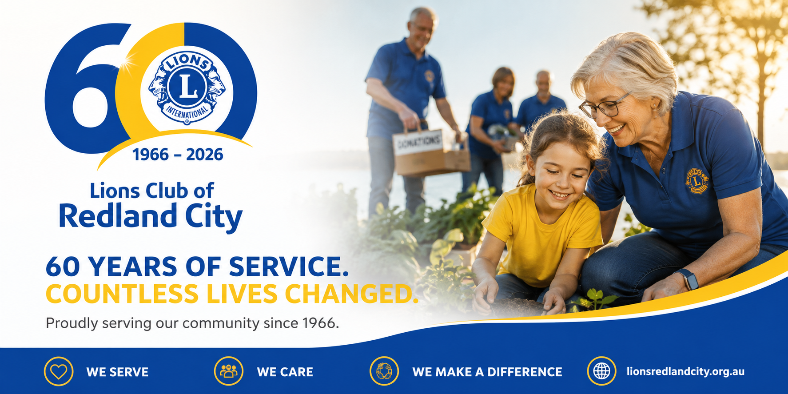
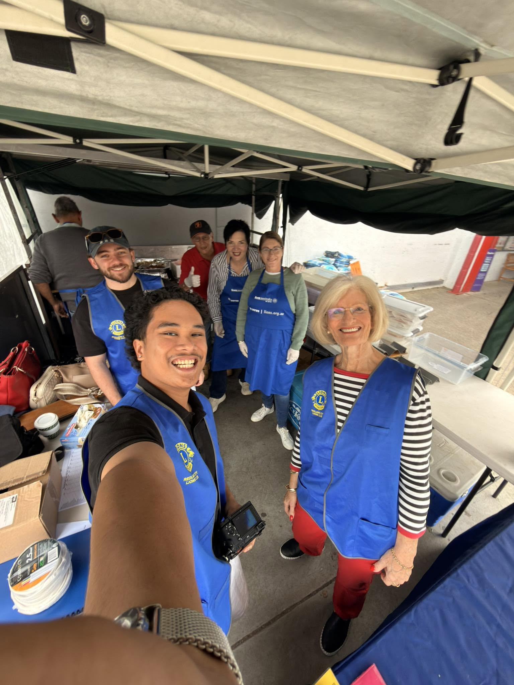
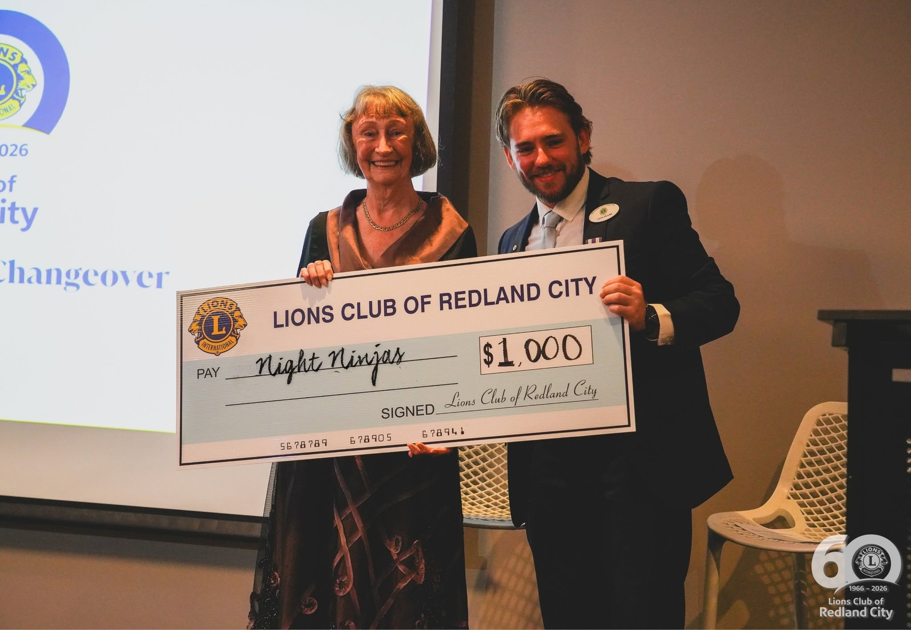
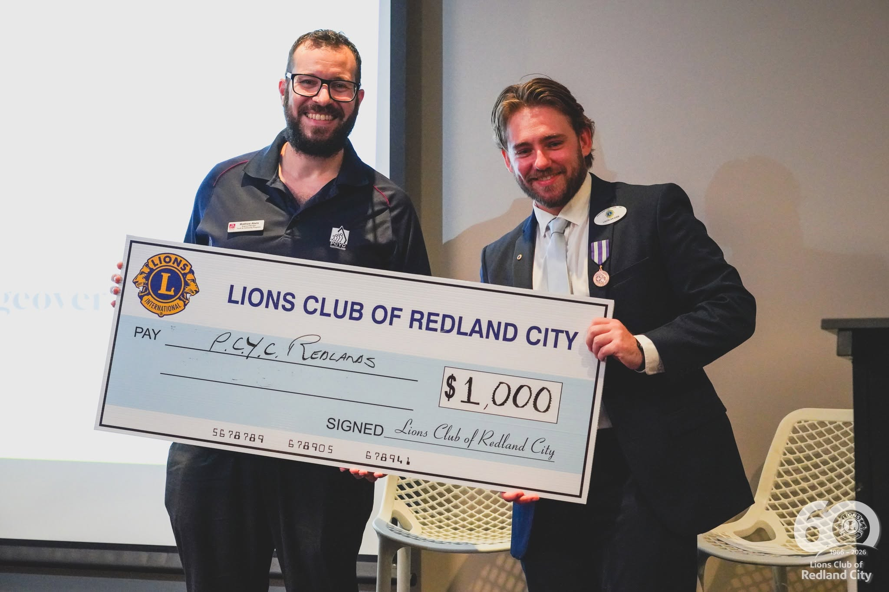
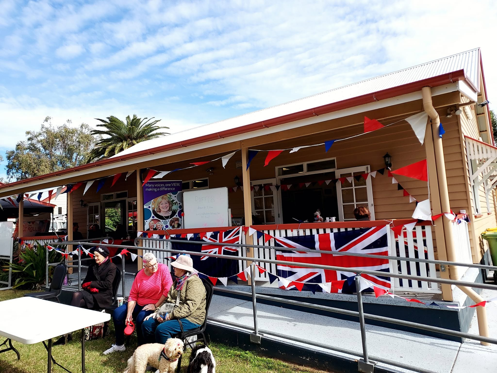
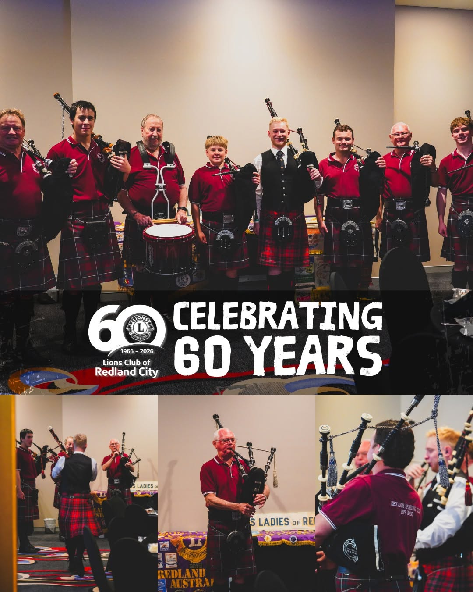
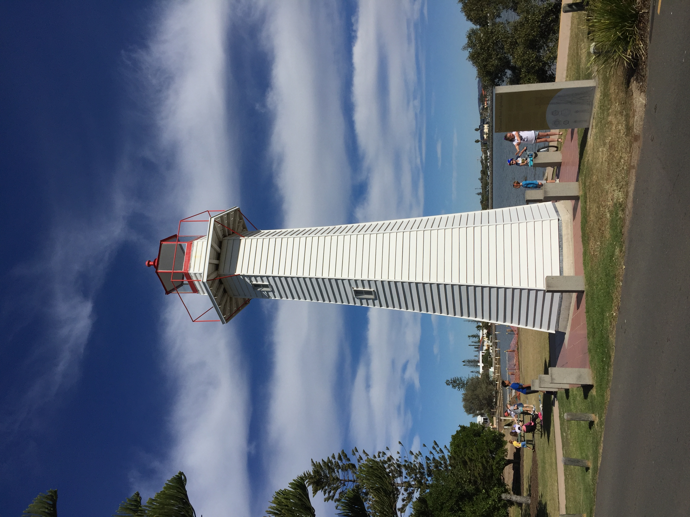
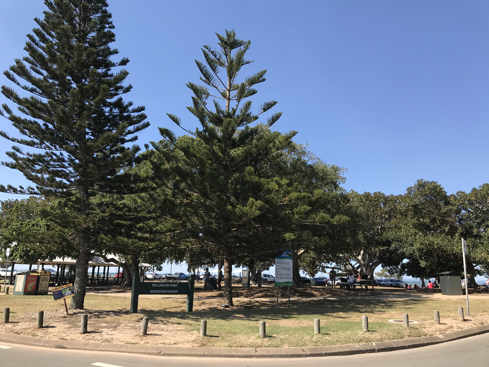
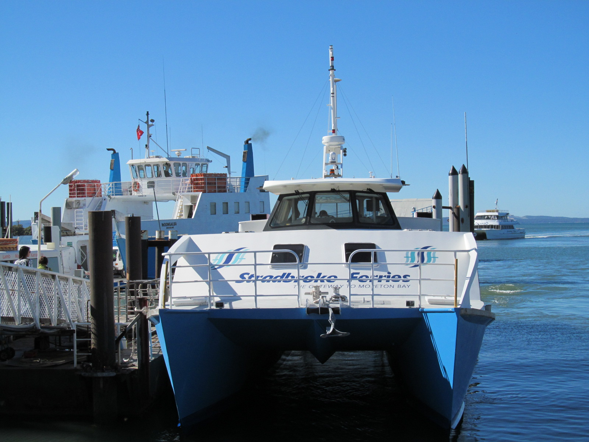

We run local projects that support seniors, families, and people in need across Redland City — from working bees to community meals.
Our fundraising events channel directly back into local causes, sight and hearing programs, and disaster relief support.
We support youth programs, environmental clean-ups, and local schools as part of our commitment to a stronger community.
Our new initiative recognising community members who quietly make a positive difference. Nominations open September 2026.
Our members out in the Redland City community — fundraising, volunteering, and celebrating 60 years of service. Photos from our Facebook page.





Home is Redland City, Queensland — from the historic Cleveland Point Light to the foreshores of Wellington Point and the Stradbroke ferries at Toondah Harbour. This is the community we're proud to serve.



Whether you're looking to volunteer, become a member, or simply support a fundraiser, there's a place for you at the Lions Club of Redland City. New members and helping hands are always welcome.